Situation Update Where Things Stand Now Ceasefire Collapsed
Updated July 17, 2026 — after a ceasefire, a peace deal, and a collapse
How is the conflict spreading beyond Iran?
For most of April, May, and June, the Gulf states, Lebanon, and the Strait of Hormuz were quiet fronts. The April 8 ceasefire held, and a June 17 peace memorandum seemed to be moving both sides toward a lasting deal.
That changed on July 6–8. Iran's Revolutionary Guard struck commercial tankers near Oman, and the U.S. answered with strikes on more than 80 targets inside Iran. President Trump declared the ceasefire "over."
The Strait of Hormuz is shut again. Iran declared the waterway closed "until the end of U.S. interference in this region," and tanker traffic has fallen to a small fraction of normal levels. The U.S. Navy disputes that the strait is fully closed and is running a naval blockade of Iranian ports instead.
The Gulf front has reopened, too. U.S. strikes on Iran have now hit six nights in a row. During that stretch, Iran fired missiles and drones at U.S.-linked bases in Bahrain, Kuwait, Qatar, and Oman. A child in Qatar was hurt by falling shrapnel. Jordan wasn't targeted directly, but its air defenses shot down three Iranian missiles that were passing through its airspace on the way somewhere else. Iraq and Syria also had to shoot down Iranian drones and missiles passing through their airspace.
This is not a quiet standoff. Iran's Foreign Ministry says it has "no plans" to return to talks. Qatar and Pakistan are trying to restart negotiations anyway.
Think about it
When a conflict spreads to countries that weren't originally involved, it makes it much harder to stop. Why do you think Iran struck U.S. allies in the Gulf again, instead of only striking the U.S. and Israel directly?
Sources for this section
- Al Jazeera — U.S.-Iran ceasefire deal: What are the terms?
- CNN — Ceasefire crumbles as fresh strikes rock Middle East
- Al Jazeera — Iran attacks five Gulf nations, shuts Hormuz: All to know
- Al Jazeera — Gulf states come under Iranian fire as U.S. strikes intensify
- Al Jazeera — U.S. mounts sixth straight night of attacks
How much is this conflict costing — and who pays the price?
The July fighting hit the economy all over again. Oil prices jumped about 12% in a single week — the biggest one-week jump since April — as the Strait of Hormuz shutdown reversed months of falling prices.
The Strait of Hormuz — shut down again. About 20% of the world's oil and gas normally passes through this narrow waterway. On July 12, only 14 ships crossed, down from 37 the same day the week before and more than 100 a day before the war started. Iran says the strait is closed; the U.S. Navy disputes that and is blockading Iranian ports instead.
The human cost keeps rising: Cross-source counts put total deaths across the war at somewhere between about 7,000 and 9,700+, with tens of thousands more wounded. Iran's own count of its dead is over 3,400; U.S. and Israeli estimates run much higher.
The economic pain still reaches far beyond the Middle East. Higher oil prices push up the cost of gas, food, and shipping for people everywhere — not just in countries that are fighting.
Think about it
Oil prices jumped again in July, even after months of the war seeming to calm down. Why might a short burst of fighting near a shipping route affect prices more than the sheer number of days a war has lasted?
Sources for this section
- OilPrice.com — Oil prices set for biggest weekly surge since April
- CNBC — Ship traffic through Hormuz falls as U.S. and Iran fight for control
- Wikipedia — Casualties of the 2026 Iran war
- Al Jazeera — Gulf states come under Iranian fire as U.S. strikes intensify
- Al Jazeera — Oil prices jump as U.S. and Iran trade attacks over Strait of Hormuz
How are people reacting — in the U.S. and around the world?
Two big stories about reactions inside Iran stand out this month: a massive funeral for the leader killed in February, and protests that came back the moment it ended.
A huge, days-long funeral: In early July, Iran held an enormous public funeral for Ayatollah Ali Khamenei, the Supreme Leader killed at the start of the war. His body was carried through Tehran, Qom, the Iraqi holy cities of Najaf and Karbala, and finally to his hometown of Mashhad for burial. Iranian officials say millions of people turned out.
The new Supreme Leader still hasn't been seen. Mojtaba Khamenei, the slain leader's son and successor, did not appear at his own father's funeral. He was reportedly hurt in the same strike that killed his father, and officials say keeping him out of sight is meant to protect him from assassination. Some Iranians say his absence makes them feel less secure, not more.
Protests resumed as soon as the funeral ended. By the weekend of July 11–12, demonstrations broke out in cities across Iran, including Tehran, Ahvaz, Shiraz, Kermanshah, and Shush. Retirees, factory and healthcare workers, and university students all took to the streets — not mainly about the war, but about years of high inflation, unpaid pensions, and falling living standards.
"Our tables are empty": That was one chant retirees used, alongside slogans like "enough of warmongering." Protesters are frustrated that the government keeps talking about the war. Meanwhile, everyday costs keep rising, and Iran's economy is expected to shrink sharply this year.
Around the region: Iran traded strikes with the U.S. and Gulf states through mid-July. Qatar and Bahrain didn't condemn Iran outright. Instead, Qatar raised its security threat level, and Gulf militaries took defensive action against the incoming missiles and drones. At the same time, Qatar kept working with Pakistan to try to broker a new ceasefire.
Think about it
Protesters are angry about the economy, not just the war — but the war is a big reason the economy is struggling. Why might a government leaning on wartime unity make it harder, not easier, to keep people from protesting economic problems?
Sources for this section
- NPR — Dayslong funeral for slain Supreme Leader Ayatollah Ali Khamenei begins in Tehran
- Al Jazeera — Khamenei family mourns, but Mojtaba's absence fuels public insecurity
- Iran News Update — Protests spread across Iran as workers reject the regime's war narrative
- IranWire — Healthcare workers protest in Neyshabur, Social Security retirees gather in Dezful
- Al Jazeera — Gulf states come under Iranian fire as U.S. strikes intensify
Question 1What is happening in Iran right now?
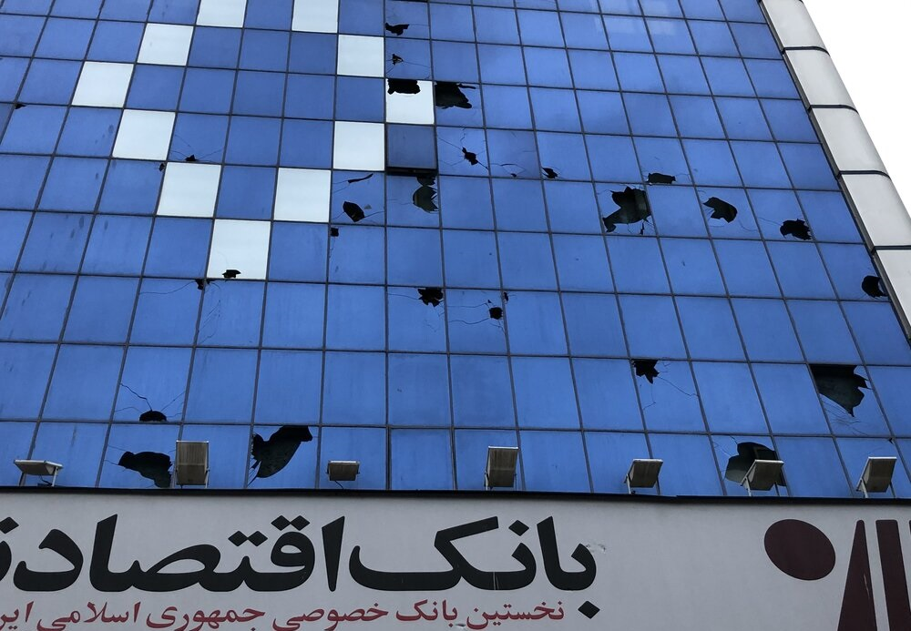
This situation is still developing — new things may happen after this page was last updated.
Always check a trusted news source for the latest updates. Some of the sources below are updated daily.
Two huge things have been happening in Iran at the same time. Let's look at both:
Part 1 — Massive protests inside Iran (December 2025–2026)
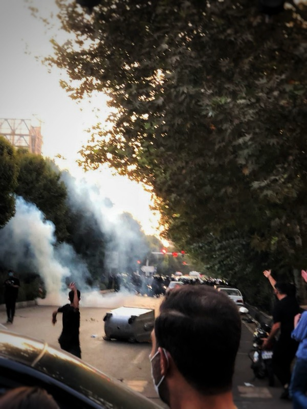
In December 2025, huge crowds of Iranians took to the streets to protest.
But it wasn't just about money. People were also furious about bigger things: they wanted more freedom, the right to speak their minds, and less government control over their daily lives.
Women, students, doctors, workers, and young people all joined in.
The government cracked down — hard
According to the Human Rights Activists News Agency, at least 6,221 people were killed and over 42,300 were arrested by the Iranian government during the crackdown — making January 2026 one of the deadliest periods of repression in Iran in decades.
This same protest movement came back in July 2026 — after Iran's government held a public funeral for the Supreme Leader killed earlier in the war, protesters returned to the streets over the same economic hardship that started it all.
Part 2 — War between the U.S., Israel, and Iran (February–July 2026)
While protests were happening inside Iran, the United States and Israel launched large military strikes on Iran on February 28, 2026.
The fighting didn't stop there. After more than five weeks of war, the U.S. and Iran agreed to a ceasefire on April 8.
Something to think about
Many Iranians were protesting against their own government and hoping for change. How does it change things when the U.S. and Israel attack a country while its own people are also fighting for freedom inside?
🔓 Bonus Fact — Unlocked!
Iran's protest movement has been called one of the largest popular uprisings in the country's history. The "Woman, Life, Freedom" chant that started in 2022 is still being used by protesters today. Activists say the movement is different this time because people from all backgrounds — not just one group — are standing together.
Question 2Where is Iran — and what is it like?

Iran is located in the Middle East, between the Persian Gulf and the Caspian Sea.
Iran was called Persia for most of history. It's one of the oldest civilizations on Earth — people have been living there for over 7,000 years.
🌟 Geography Explorer — You clicked all the stats!
Fun fact: Iran's official name is the Islamic Republic of Iran. It borders seven countries: Iraq, Turkey, Armenia, Azerbaijan, Turkmenistan, Afghanistan, and Pakistan — plus two bodies of water (the Persian Gulf and the Caspian Sea).
Question 3Who are the people of Iran?
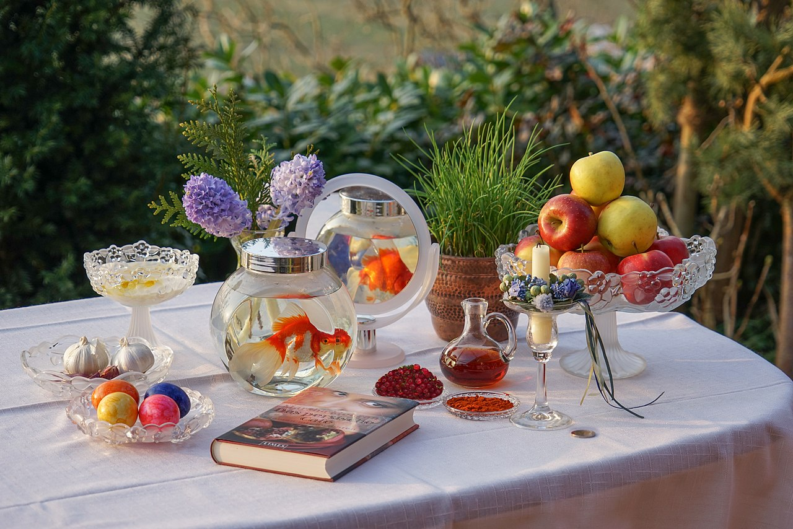
Important: The Iranian government ≠ the Iranian people
Millions of Iranians love art, music, poetry, soccer, and connection with the world. Many have been protesting against their own government's restrictions. When news talks about "Iran doing something," it usually means the government of Iran, not everyday Iranians.
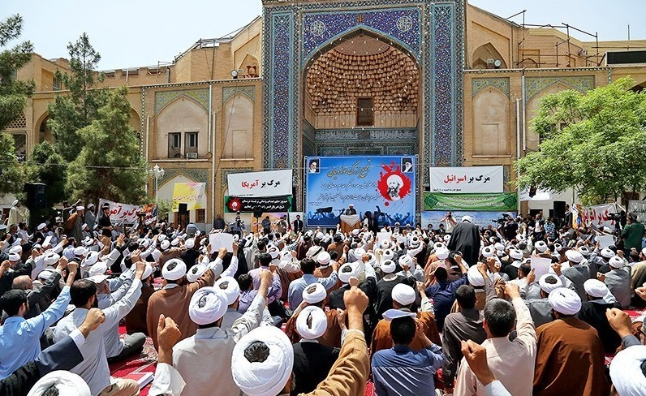
Iran has a very young population — about half of all Iranians are under 35 years old.
Iran is home to many different ethnic groups: Persians, Azerbaijanis, Kurds, Arabs, and Lurs.
Under Iran's current government, people face many restrictions. Women must wear a hijab (head covering) in public by law.
Question 4How did we get here? The history timeline
Why does history matter here?
Many tensions between Iran and the United States go back 70+ years. Understanding what happened then helps explain why things are so complicated today. Click the purple quiz buttons to test yourself and earn points!
Britain was furious. They worked with the CIA (the U.S. spy agency) to secretly remove Mosaddegh from power and put the Shah (king) back in control.
Many Iranians never forgot this. It's one of the biggest reasons for deep distrust of the United States in Iran today.
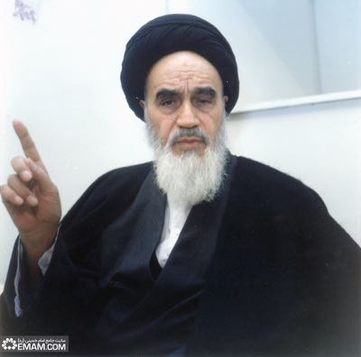
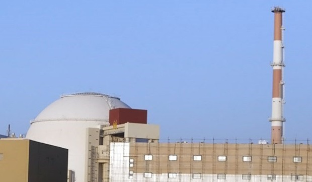
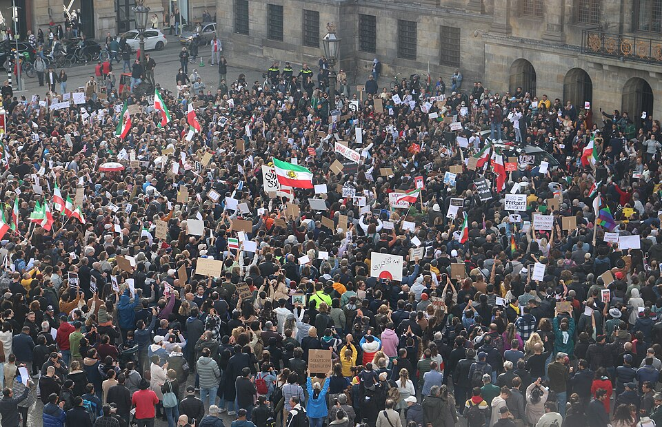
🕵️ You found a hidden moment in history!
1960s – The Shah's White Revolution: Between the 1953 coup and the 1979 revolution, the Shah launched major modernization programs — building roads, schools, and giving women the right to vote. But he also used a brutal secret police force called SAVAK to silence critics. Many historians say this repression actually helped cause the 1979 revolution, because people grew more and more angry.
Question 5Why does this matter — especially for us?
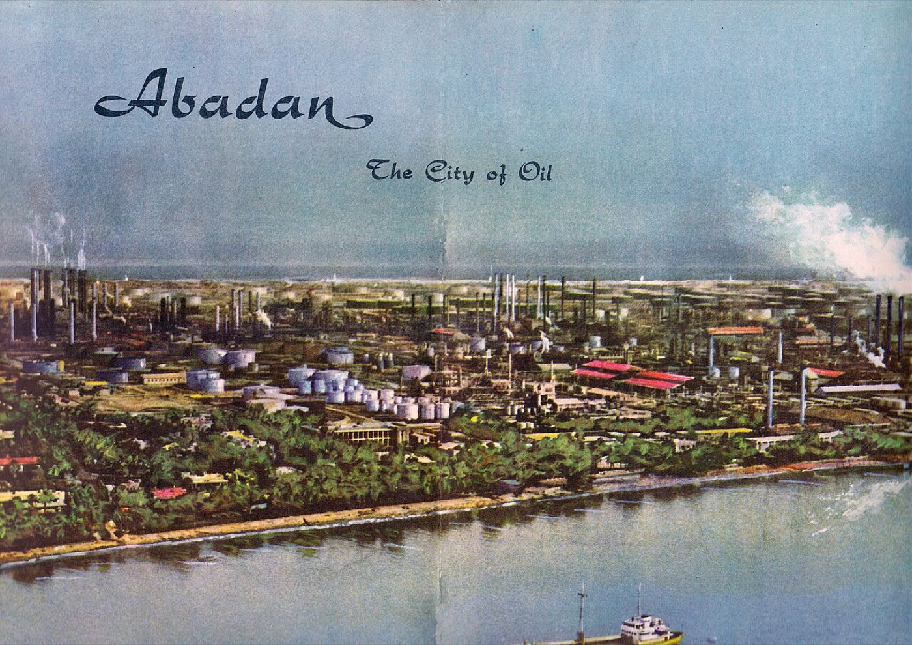
Iran has some of the world's largest oil reserves
Iran has the 4th largest oil reserves on Earth.
A conflict that could spread to more countries
Iran has allies and partners across the Middle East — in Lebanon, Gaza, Iraq, and Yemen.
U.S. actions have consequences — and a long history
The United States has been involved in Iran's story for over 70 years — from helping overthrow Iran's democracy in 1953, to the nuclear deal, to the killing of Soleimani, to the 2026 attacks.
Real people — just like us — are affected every day
Behind every news headline are millions of ordinary Iranians — students, parents, teachers, and kids. Many of them want the same things people everywhere want: safety, freedom, and a chance at a better life.
Media literacy matters here
Multiple experts warn that reporting on Iran can be incomplete or biased. Iran's government often restricts internet access and controls what information gets out.
→ Israel-Iran situation explained in simple words for students
🌟 5 Points Unlocked — Bonus Deep Dive!
You earned this! Here's something most people don't know: Iran's government is actually a hybrid system — it has an elected president AND parliament, BUT an unelected Supreme Leader has the final say over everything. So Iranians can vote, but the Supreme Leader can override or block any decision he disagrees with. After Khamenei's death in 2026, no one knows who will take over — or what it will mean for Iran's future.
🏆 10 Points — You're a History Expert!
You've shown serious curiosity about this topic. Here's the hardest question to think about:
The U.S. helped remove Iran's democracy in 1953. Do you think that decision, made 70+ years ago, still shapes U.S.-Iran relations today? If yes, how? If a country makes a mistake, how long should other countries remember it — and should it affect how they work together now?
There's no single right answer. Historians, politicians, and Iranians themselves disagree. That's what makes it a great question.
BonusKey people to know
Mohammad Mosaddegh
A popular leader who wanted Iran to control its own oil. The CIA helped remove him from power. Many Iranians see his story as proof that Western countries interfere in their affairs.
Ayatollah Khomeini
The religious leader who led the 1979 Revolution and turned Iran into an Islamic Republic. He shaped the entire system of government that Iran has today.
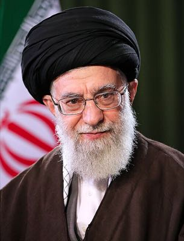
👤Ayatollah Khamenei
Iran's most powerful leader for over 30 years. He had the final say over the military, courts, and major decisions. His death in the 2026 U.S.-Israel strikes leaves Iran's future deeply uncertain.
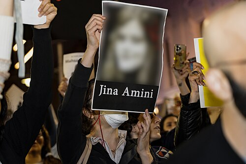
✊Mahsa Amini
A 22-year-old woman whose death in police custody in 2022 sparked the biggest protests in Iran in decades. Her name became a symbol of the fight for freedom.
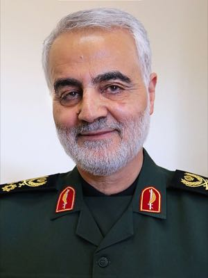
🎯Gen. Qasem Soleimani
Iran's most powerful general, responsible for Iran's military activities across the Middle East. His killing by a U.S. drone strike in 2020 nearly started a war.
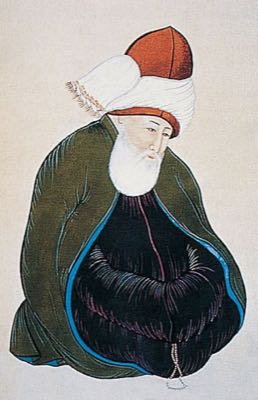
📜Rumi
One of the most famous poets in history, born in what is now Afghanistan, writing in Persian. His poetry about love, God, and humanity is still read around the world — even translated into English today.
WatchVideos — see it for yourself
Sometimes a video explains things better than words. Here are two good ones — one longer deep-dive and one short overview. You can pause, rewind, or watch with captions on.
Iran in depth
A deeper look at Iran's history, politics, and culture. Good for students who want to really understand the full story.
Quick overview
Short on time? This is the one. A fast, clear summary of what's happening and why it matters.
While you watch, think about:
What surprised you? What questions do you still have? What do the videos say that matches — or doesn't match — what you read on this page?
ResourcesAll sources — dig deeper into what you're curious about
Each card below links to a real article or resource. Look for the colored tag to see where it comes from!
Reading levels
Labels: ⭐ Easier = great starting point · ⭐⭐ Medium = some reading required · ⭐⭐⭐ Harder = for students who want a deeper challenge
The U.S., Israel, and Iran Conflict — Explained for Kids
Written specifically for young people. Simple, clear language.
Iran — Country Profile
Geography, culture, food, animals, and people of Iran. Lots of photos!
Israel-Iran War Explained in Simple Words for Students
A student-friendly explainer about the Israel-Iran conflict.
What We Know About the U.S.-Israel Attacks on Iran
Classroom lesson with videos, questions, and multiple news sources to compare.
Iran 2026 Protests
NPR's coverage of the massive nationwide protests that exploded in late 2025.
How the CIA Overthrew Iran's Democracy in Four Days
The 1953 coup that removed Iran's elected leader — essential background.
Iran and the U.S. — Part One (Throughline Podcast)
A deep dive into the long history between the two countries. Audio available!
Iran and the U.S. — Part Two: Rules of Engagement
How the two countries have interacted through back channels and secret agreements.
Iran and the U.S. — Part Three: Soleimani's Iran
Who was General Soleimani and what happened when the U.S. killed him in 2020?
NPR Special Series on Iran
A full series of journalism and analysis on Iran.
The Iran Uprising Explained: Expert Q&A
A professor from Iran shares what's really happening and clears up misconceptions.
Behind the Headline: The U.S.-Iran Crisis Explained
Princeton policy experts break down the conflict and what might happen next.
Background Students Need to Think Critically About U.S.-Iran Relations
The Council on Foreign Relations explains the big picture for student researchers.